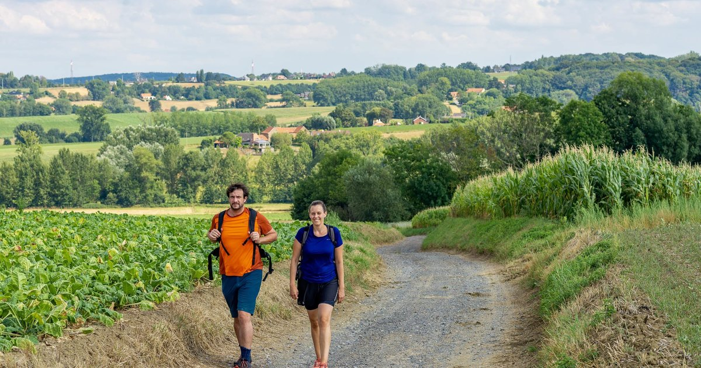
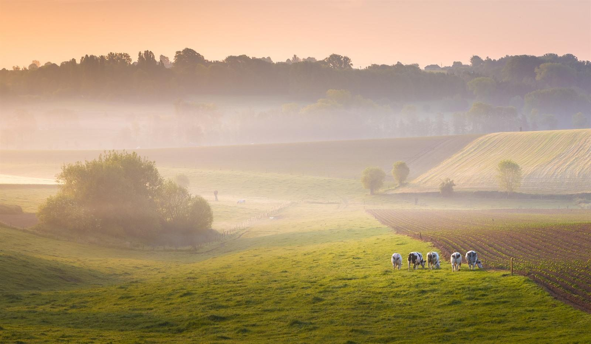

Met kinderen
- IJsmolenhoeve Ronse · boerderij, klimmuur, ponyrit
- Pairi Daiza Brugelette
- Ezelfokkerij Château des Mottes Frasnes

Onze favorieten in en rond het Pays des Collines.

Alle routes vindt u op routes.be.
Wandelen, fietsen, proeven en niets moeten. Boek de woning en ontdek het Pays des Collines op uw eigen tempo.
Boek uw verblijf